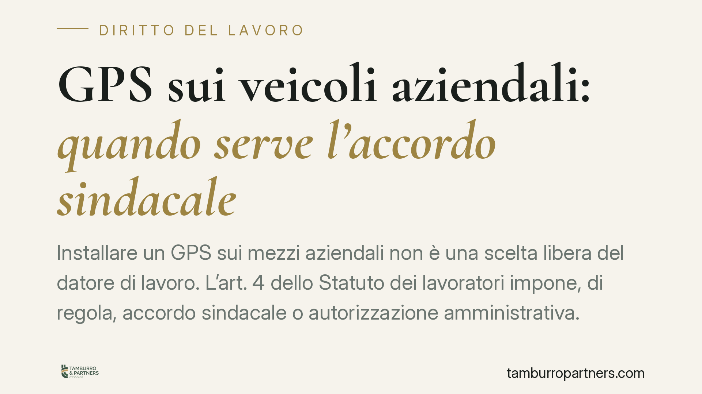

GPS sui veicoli aziendali: quando serve l'accordo sindacale
Installare un GPS sui mezzi aziendali non è una scelta libera del datore di lavoro. L'art. 4 dello Statuto dei lavoratori impone, di regola, accordo sindacale o autorizzazione amministrativa. Le recenti indicazioni dell'Ispettorato Nazionale del Lavoro e la giurisprudenza di legittimità chiariscono i confini tra localizzazione lecita e controllo vietato, con effetti decisivi sull'utilizzabilità dei dati raccolti.

Il fatto
Il tema della geolocalizzazione dei veicoli aziendali torna periodicamente all'attenzione di imprese e consulenti. La domanda ricorrente è semplice: per montare un GPS su un furgone, un'auto di servizio o un mezzo per il trasporto rifiuti serve sempre l'accordo con i sindacati?
La risposta dipende dalla funzione concreta del dispositivo e dal quadro normativo di settore. Le indicazioni di prassi dell'Ispettorato Nazionale del Lavoro — la cui numerazione e datazione esatta vanno verificate negli estremi ufficiali al momento della consultazione — e gli orientamenti recenti della Corte di Cassazione aiutano a tracciare la linea di confine.
Inquadramento normativo
L'art. 4 della L. 300/1970 (Statuto dei lavoratori) distingue due situazioni.
Il primo comma riguarda gli impianti e gli strumenti da cui può derivare un controllo a distanza dell'attività dei lavoratori. Possono essere installati solo per esigenze organizzative, produttive, di sicurezza del lavoro o di tutela del patrimonio aziendale, e previo accordo con le rappresentanze sindacali o, in mancanza, previa autorizzazione dell'Ispettorato del Lavoro. Il GPS rientra tipicamente in questa categoria: è uno strumento dal quale deriva un controllo indiretto sull'attività del dipendente.
Il secondo comma esclude dall'obbligo di accordo o autorizzazione gli strumenti utilizzati dal lavoratore per rendere la prestazione e gli strumenti di registrazione degli accessi e delle presenze. La geolocalizzazione, però, non viene di norma considerata uno strumento "necessario alla prestazione": per questo resta attratta nel primo comma, salvo che una specifica disciplina di settore imponga il dispositivo (si pensi ad alcuni obblighi in materia di sicurezza o di tracciabilità nel trasporto rifiuti). In tali casi l'obbligo normativo può incidere sulla qualificazione del sistema.
Sul piano sanzionatorio, l'installazione in violazione dell'art. 4 espone il datore alle sanzioni richiamate dall'art. 38 dello Statuto, nella formulazione vigente: si tratta di sanzioni di natura penale (ammenda o arresto) salvo oblazione, applicabili dall'organo di vigilanza. La conseguenza più rilevante nel contenzioso resta però un'altra.
Implicazioni pratiche
L'effetto più delicato non è la sanzione, ma l'inutilizzabilità dei dati. Se il GPS è stato installato senza accordo né autorizzazione, i dati raccolti non possono essere usati a fini disciplinari o in giudizio. Il datore si trova così con un sistema costoso e giuridicamente sterile.
Un ulteriore requisito di legittimità è l'adeguata informativa ai lavoratori sulle modalità d'uso degli strumenti e sulle modalità di controllo, da fornire nel rispetto della normativa sulla protezione dei dati personali: Regolamento UE 2016/679 (GDPR) e D.Lgs. 196/2003, come novellato dal D.Lgs. 101/2018. Senza informativa conforme, anche un GPS correttamente autorizzato produce dati non spendibili.
Rilievo a parte hanno i cosiddetti controlli difensivi. La giurisprudenza ammette che il datore possa utilizzare dati raccolti per reagire a condotte illecite già fondatamente sospettate, quando il controllo è mirato e successivo al sospetto. Resta invece vietato il monitoraggio generalizzato e preventivo dell'attività, usato per scovare possibili irregolarità: in quel caso si ricade pienamente nell'art. 4 e nei suoi vincoli.
Cosa fare in concreto
- Verificare la funzione del dispositivo: chiarire se il GPS serve a esigenze organizzative, di sicurezza o di tutela del patrimonio, o se è imposto da una disciplina di settore.
- Attivare la procedura dell'art. 4: stipulare l'accordo con le rappresentanze sindacali o, in mancanza, richiedere l'autorizzazione all'Ispettorato del Lavoro prima dell'installazione.
- Predisporre l'informativa ai lavoratori conforme al GDPR e al D.Lgs. 196/2003, con indicazione di finalità, modalità di controllo e tempi di conservazione dei dati.
- Limitare il trattamento: disattivare la localizzazione fuori dall'orario di servizio e conservare i dati solo per il tempo strettamente necessario.
- Ricostruire la posizione dei sistemi già attivi: è opportuno verificare che gli impianti installati rispettino i requisiti di accordo, autorizzazione e informativa, per evitare l'inutilizzabilità dei dati.
La materia resta in evoluzione: prima di decisioni operative è opportuno controllare gli estremi aggiornati delle note di prassi e delle pronunce di legittimità citate.
---
Contributo informativo a cura di Tamburro & Partners - Avv. Giuseppe Tamburro. Non costituisce parere legale.
Ogni storia di lavoro ha i suoi tempi.
Se gestisci HR e vuoi un confronto su contenzioso, ispezioni o licenziamenti, scrivi allo studio. Ti rispondiamo entro un giorno lavorativo.